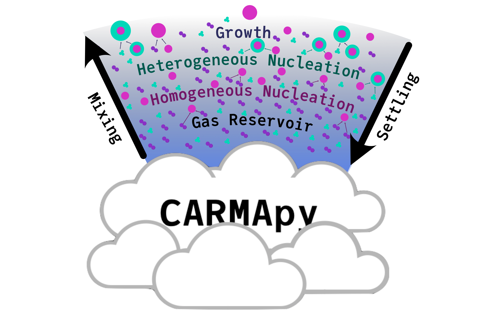
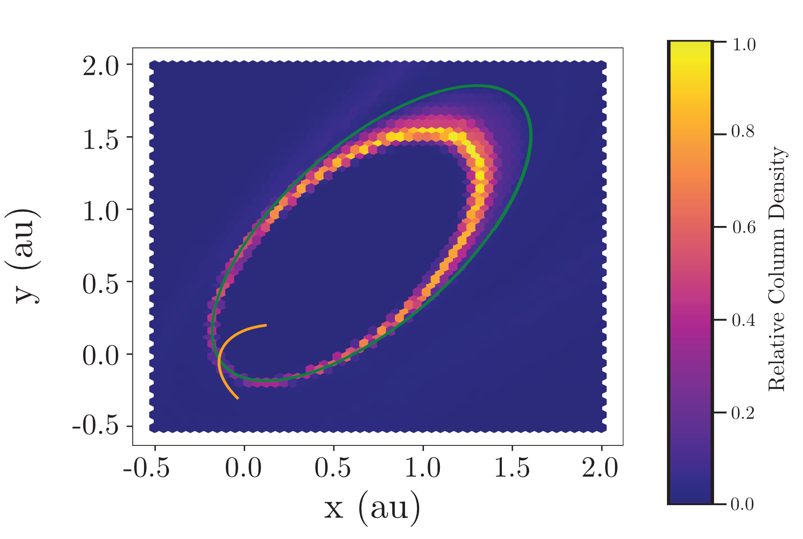
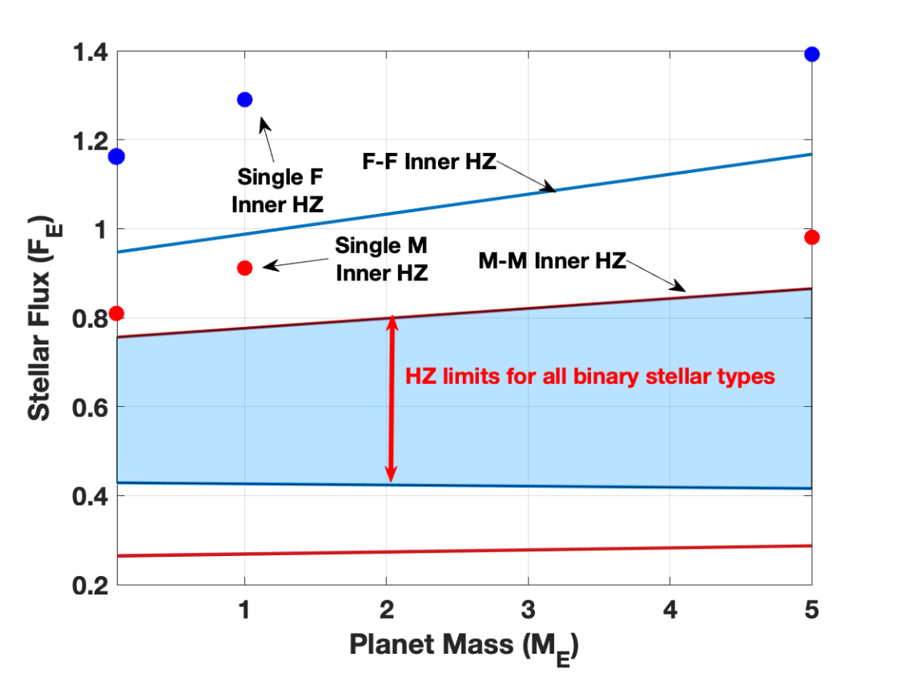
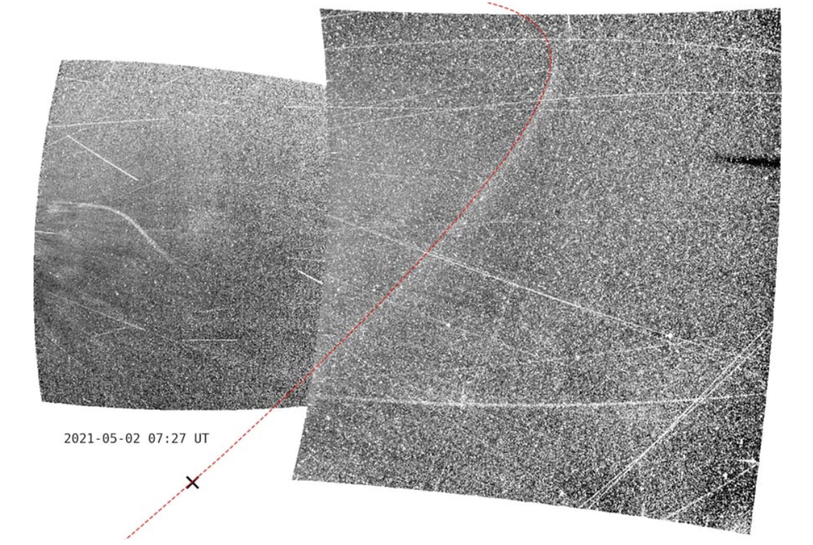
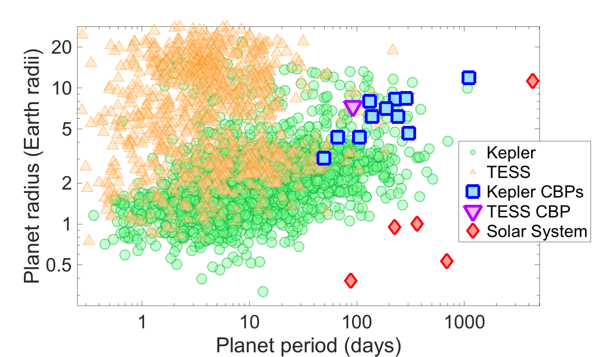

First Author


Cukier & Szalay 2023 · Planetary Science Journal

Cukier et al. 2019 · Publications of the Astronomical Society of the Pacific
Other Publications

Battams et al. 2025 · The Astrophysical Journal

Kostov et al. 2020 · The Astronomical Journal